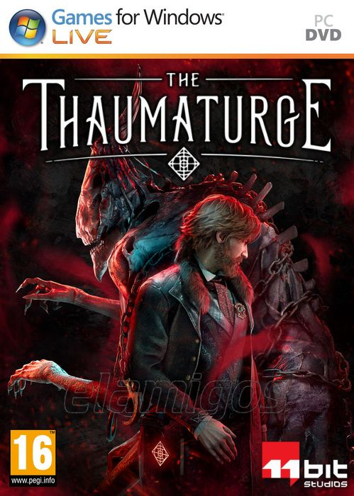

The Thaumaturge 34.4 GB
Género: RPG, Misterio
the Thaumaturge es un RPG repleto de historia y decisiones moralmente
dudosas ambientado en el caleidoscopio de culturas que era la Varsovia de
principios del siglo XX. Pero en este mundo existen los salutors, seres
místicos que solo los taumaturgos pueden ver y controlar.